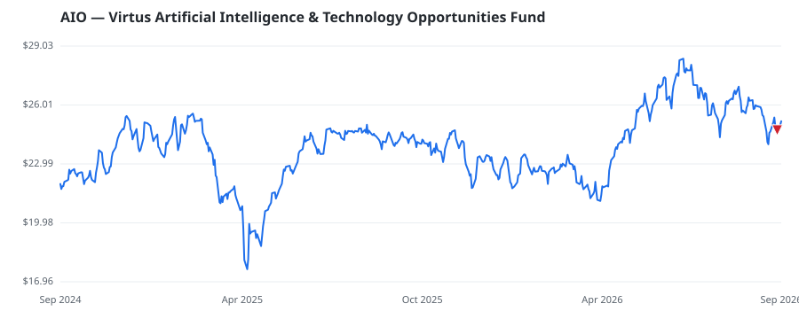

bullish · bearish · n/a — dots: price>SMA10 · SMA10>SMA50 · SMA50>SMA200 · up>down volume (20d)
Other · small cap

Virtus Artificial Intelligence & Technology Opportunities Fund is a diversified, limited-term, closed-end management investment company. Its investment objective is to provide total return through a combination of current income, current gains, and long-term capital appreciation. · website
| Fund | Fund alpha vs SPY | Position | % of book |
|---|---|---|---|
| DECISION INVESTMENTS, INC | +6% | $0M | 0.4% |
Hedge data: SEC EDGAR 13F · ranked funds beat SPY in >50% of their quarters · fund alpha = mirror-portfolio return minus SPY.